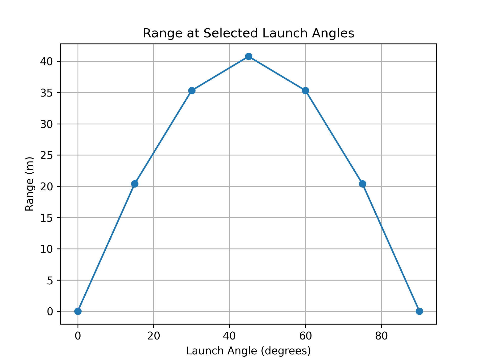
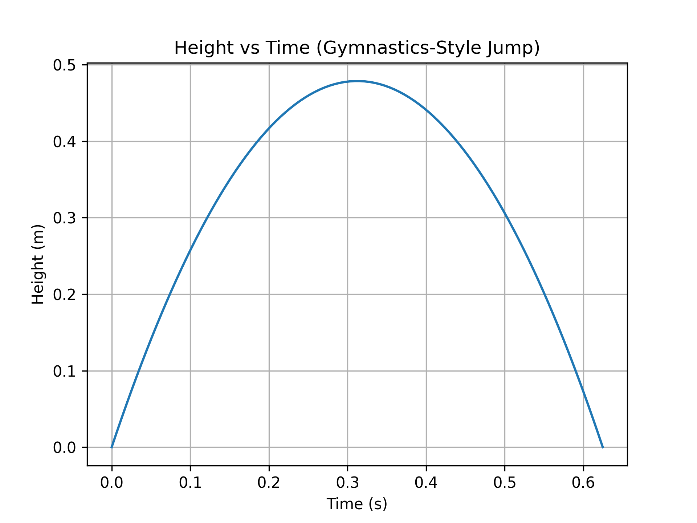
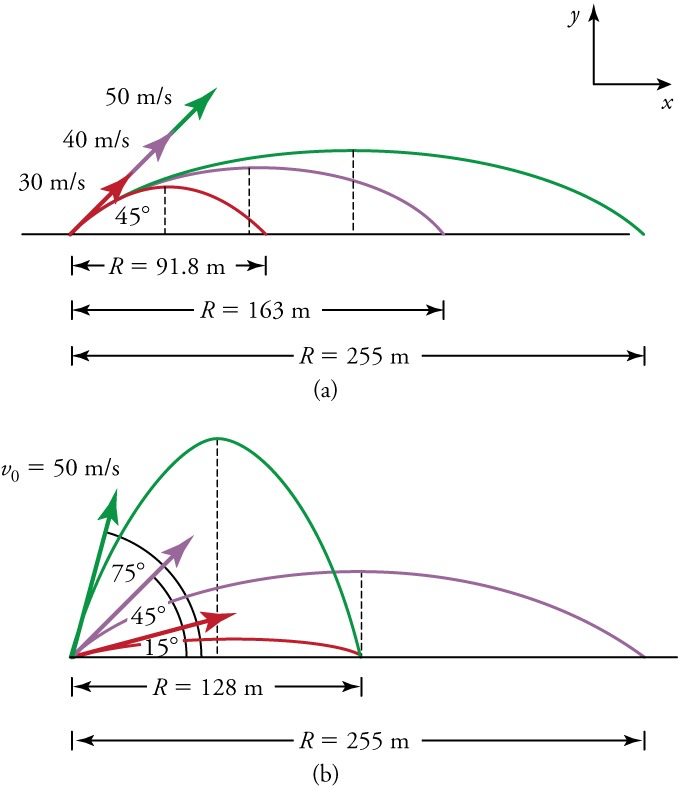

Problem 1
Projectile Motion: Analysis of Range Dependence on Launch Angle
1. Theoretical Foundation
Projectile motion is governed by Newton’s laws. Assuming no air resistance, the motion can be described using kinematic equations:
- Horizontal motion:
- Vertical motion:
The total time of flight is found by solving for when the projectile returns to its initial height:
The horizontal range is given by:
2. Analysis of the Range
The horizontal range depends on:
- Launch Angle (\(\theta\)): The range is maximized at \( 45^\circ \).
- Initial Velocity (\(v_0\)): Higher velocity increases range quadratically.
- Gravitational Acceleration (g): A stronger gravitational field decreases range.
3. Practical Applications
- Sports: Understanding ball trajectories in football and basketball.
- Engineering: Designing projectile-based systems like rockets or artillery.
- Astrophysics: Studying planetary motion under different gravity levels.
- Gymnastics: I did gymnastics for about 4.5 years, and even though I stopped, I still remember how much things like angle and push-off mattered during flips and vaults. Now that I’m learning the physics behind it, it all makes a lot more sense.
4. Implementation: Python Simulation
We use Python to visualize how range varies with launch angle.
import numpy as np
import matplotlib.pyplot as plt
def projectile_range(v0, g):
angles = np.linspace(0, 90, 100) # Angles in degrees
angles_rad = np.radians(angles) # Convert to radians
ranges = (v0**2 * np.sin(2 * angles_rad)) / g
plt.figure(figsize=(8,5))
plt.plot(angles, ranges, label=f'v0 = {v0} m/s')
plt.xlabel('Launch Angle (degrees)')
plt.ylabel('Range (m)')
plt.title('Projectile Range vs. Launch Angle')
plt.legend()
plt.grid()
plt.show()
# Example parameters
v0 = 20 # Initial velocity in m/s
g = 9.81 # Gravity in m/s^2
projectile_range(v0, g)
#### Range at Selected Launch Angles
This graph shows how the horizontal range changes for selected launch angles (0°, 15°, ..., 90°).
The range is maximized at 45°, and symmetric angles give equal ranges (like 30° and 60°).

Full Range vs. Launch Angle Plot
This plot provides a smoother, continuous look at how launch angle affects range.
It complements the previous graph by showing the full curve instead of selected angles.

Range vs Initial Velocity at 45°
This graph shows how the range increases quadratically as the initial velocity increases, with a fixed launch angle of 45°.

import numpy as np
import matplotlib.pyplot as plt
def range_vs_velocity(theta_deg, g):
velocities = np.linspace(1, 50, 100)
theta_rad = np.radians(theta_deg)
ranges = (velocities**2 * np.sin(2 * theta_rad)) / g
plt.figure(figsize=(8,5))
plt.plot(velocities, ranges)
plt.xlabel('Initial Velocity (m/s)')
plt.ylabel('Range (m)')
plt.title(f'Range vs Initial Velocity at {theta_deg}°')
plt.grid()
plt.savefig("range_vs_velocity.png", dpi=300)
plt.show()
range_vs_velocity(45, 9.81)
---
### Gymnastics-Style Jump (Simplified Example)
```python
import math
# Gymnastics jump simulation
v0 = 4 # initial velocity (m/s)
angle = 50 # launch angle (degrees)
g = 9.81 # gravity (m/s^2)
theta = math.radians(angle)
t = (2 * v0 * math.sin(theta)) / g
R = (v0**2 * math.sin(2 * theta)) / g
print("Time in air:", round(t, 2), "s")
print("Distance:", round(R, 2), "m")
# Calculate maximum height
h_max = (v0**2 * math.sin(theta)**2) / (2 * g)
print("Maximum height:", round(h_max, 2), "m")

This is a short example of how angle and velocity affect the flight time and distance of a jump, like in gymnastics.
5. Discussion on Limitations
- Air Resistance: In real scenarios, drag significantly reduces range.
- Uneven Terrain: Changes in landing elevation affect results.
- Wind Influence: Can alter trajectory unpredictably.
6. Examples

Conclusion
This analysis demonstrates the relationship between launch angle and range, emphasizing its significance in various real-world applications. It also helped me connect what I’m learning now to the years I spent doing gymnastics. Future studies can include more realistic factors like air resistance and body posture during motion.